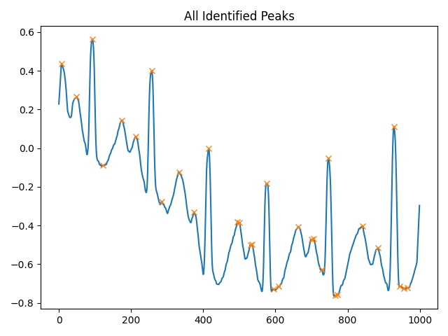
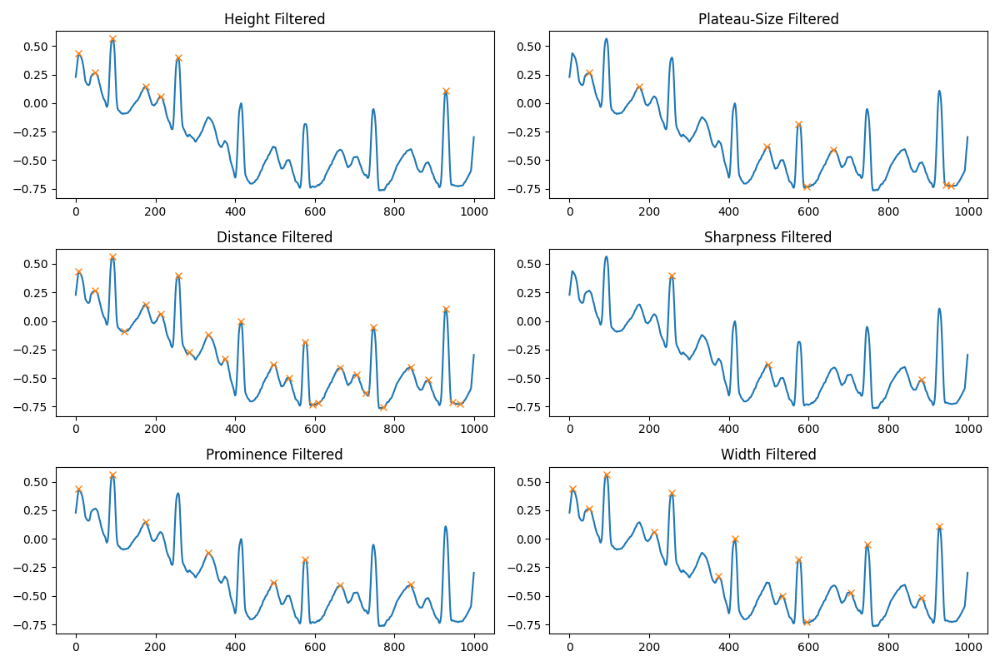
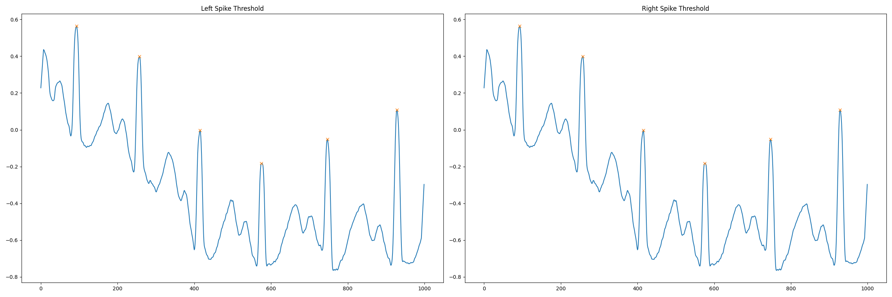
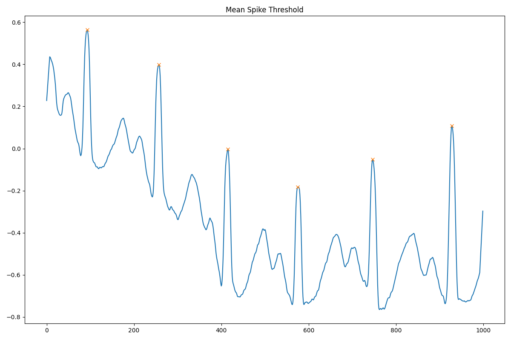

Signal Used for this Demo
Peak Detection

All Detected Peaks
FindPeak fp = new FindPeak(this.highResSignal);
Peak out = fp.detect_peaks();
int[] peaks = out.getPeaks();
Peak out2 = fp.detect_troughs();
int[] troughs = out2.getPeaks();
Peak Filtering

Height Filtered
Plateau Size Filtered
double[] outHeight = out.getHeights(); //To get height of all peaks
double[] height = out.findPeakHeights(peaks); //To calculate height of specific peaks
int[] filteredPeaks1 = out.filterByHeight(0.02, 1.0); //To filter peaks by height
int[] outPlateau = out.getPlateauSize(); //To get plateau size of all peaks
int[] outPlateau = out.findPlateauSize(peaks); //To calculate plateau size of specific peaks
int[] outFilteredPS1 = out.filterByPlateauSize(2, 4); //To filter peaks by plateau size
Distance Filtered
Sharpness Filtered
int[] outDistance = out.getPeakDistance(); //To get distance of all peaks
int[] distance = out.findPeakDistance(peaks); //To calculate distance of specific peaks
int[] outFilteredDistance1 = out.filterByPeakDistance(12); //To filter peaks by distance
double[][] outSharpness = out.getPeakSharpness(); //To get sharpness of all peaks
double[][] sharpness = out.findPeakSharpness(peaks); //To calculate sharpness of specific peaks
int[] filteredSharp1 = out.filterBySharpness(0.002, 0.005); //To filter peaks by sharpness
Prominence Filtered
Width Filtered
double[][] outPromData = out.getProminenceData(); // To get the prominence, left base and right base
double[] outProminence = out.getProminence(); //To get only prominence of all peaks
double[][] promData = out.findPeakProminence(peaks); // To get the prominence, left base and right base
double[] prominence = promData[0]; //To calculate only prominence of specific peaks
int[] filteredProm1 = out.filterByProminence(0.2, 0.6); //To filter peaks by prominence
double[][] outWidthData = out.getWidthData(); // To get the width, left base and right base at a relative height of 0.5
double[] outWidth = out.getWidth(); //To get width of all peaks
double[][] widthData = out.findPeakWidth(peaks, 0.5); // To get the width, left base and right base at a relative height of 0.5
double[] width = widthData[0]; //To calculate width of specific peaks
int[] filteredWidth1 = out.filterByWidth(5, 20); //To filter peaks by width
Signal Used for this Demo
Spike Detection (Check Wiki)
All Detected Spikes
FindPeak fp = new FindPeak(this.highResSignal);
Spike out = fp.get_spikes();
double[] outLeftSpike = out.getLeftSpike();
double[] outRightSpike = out.getRightSpike();
double[] outMeanSpike = out.getMeanSpike();
double[] outMaxSpike = out.getMaxSpike();
double[] outMinSpike = out.getMinSpike();
Spike Filtering

Left-Spike Filtered
Right-Spike Filtered
int[] outLeftFilter = out.filterByProperty(0.5, 5, "left");
int[] outRightFilter = out.filterByProperty(0.5, 5, "right");

Mean Filtered
int[] outMeanFilter = out.filterByProperty(0.5, 5, "mean");
Max-Spike Filtered
Min-Spike Filtered
int[] outMaxFilter = out.filterByProperty(0.5, 5, "max");
int[] outMinFilter = out.filterByProperty(0.5, 5, "min");